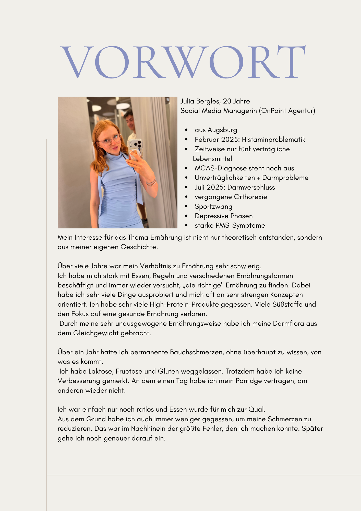
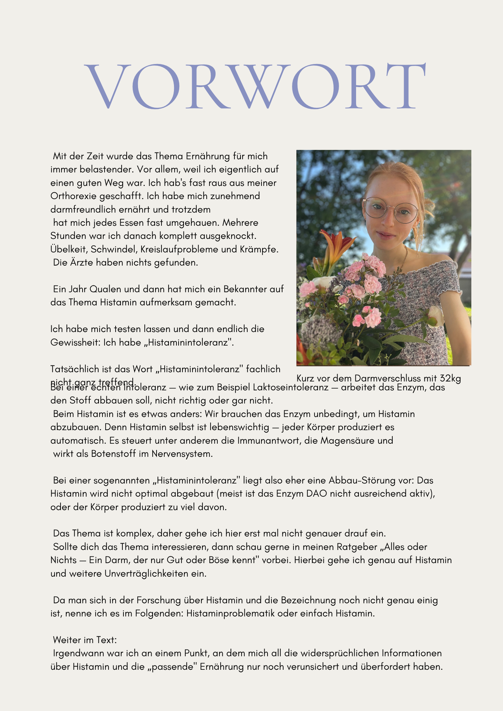
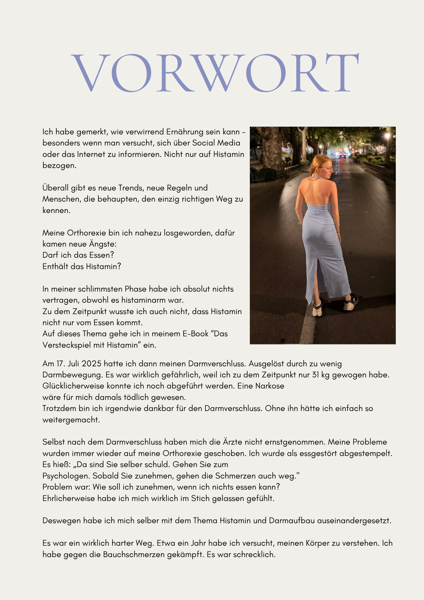
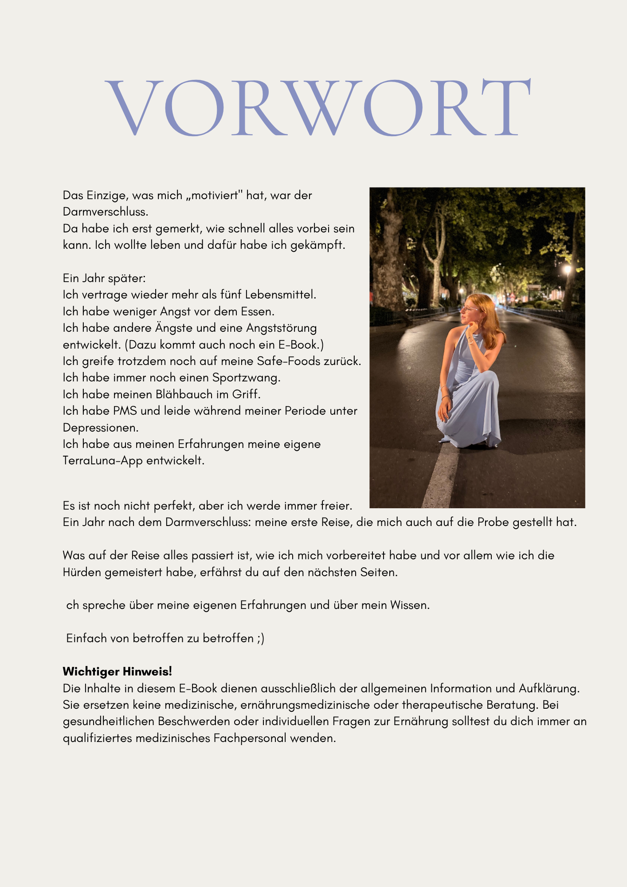

Vorwort
Wer ich bin und warum es dieses E-Book gibt.

Schaffe ich es mit Histamin & MCAS zu reisen?
Meine erste Reise nach dem Darmverschluss. Was ich falsch gemacht habe. Was mir geholfen hat. Und alles, was ich seitdem für unterwegs klar habe.
Zahlung per Vorkasse · Überweisung oder PayPal · Du erhältst eine Rechnung, überweist, und bekommst das PDF per E-Mail.
Nach dem Darmverschluss und der Histamin-Diagnose war Reisen für mich lange undenkbar. Das E-Book ist die Sammlung all der Sachen, die ich mir gewünscht hätte, dass mir sie jemand vorher gesagt hätte.
Da man sich in der Forschung über die Bezeichnung noch nicht einig ist, nenne ich es hier: Histaminproblematik — oder einfach Histamin.

Wer schreibt hier eigentlich — und warum. Für wen dieses E-Book gedacht ist. Was du bekommst. Und was es bewusst nicht ist.

Seite 1

Seite 2

Seite 3

Seite 4
Social Media Managerin (OnPoint Agentur) · aus Augsburg
Februar 2025: Histaminproblematik · Zeitweise nur fünf verträgliche Lebensmittel
MCAS-Diagnose steht noch aus · Unverträglichkeiten + Darmprobleme
Juli 2025: Darmverschluss · vergangene Orthorexie · Sportzwang
Depressive Phasen · starke PMS-Symptome
Mein Interesse für das Thema Ernährung ist nicht nur theoretisch entstanden, sondern aus meiner eigenen Geschichte.
Über viele Jahre war mein Verhältnis zu Ernährung sehr schwierig.
Ich habe mich stark mit Essen, Regeln und verschiedenen Ernährungsformen beschäftigt und immer wieder versucht, „die richtige" Ernährung zu finden. Dabei habe ich sehr viele Dinge ausprobiert und mich oft an sehr strengen Konzepten orientiert. Ich habe sehr viele High-Protein-Produkte gegessen. Viele Süßstoffe und den Fokus auf eine gesunde Ernährung verloren.
Durch meine sehr unausgewogene Ernährungsweise habe ich meine Darmflora aus dem Gleichgewicht gebracht.
Über ein Jahr hatte ich permanente Bauchschmerzen, ohne überhaupt zu wissen, von was es kommt.
Ich habe Laktose, Fructose und Gluten weggelassen. Trotzdem habe ich keine Verbesserung gemerkt. An dem einen Tag habe ich mein Porridge vertragen, am anderen wieder nicht.
Ich war einfach nur noch ratlos und Essen wurde für mich zur Qual.
Aus dem Grund habe ich auch immer weniger gegessen, um meine Schmerzen zu reduzieren. Das war im Nachhinein der größte Fehler, den ich machen konnte. Später gehe ich noch genauer darauf ein.
Mit der Zeit wurde das Thema Ernährung für mich immer belastender. Vor allem, weil ich eigentlich auf einen guten Weg war. Ich hab's fast raus aus meiner Orthorexie geschafft. Ich habe mich zunehmend darmfreundlich ernährt und trotzdem hat mich jedes Essen fast umgehauen. Mehrere Stunden war ich danach komplett ausgeknockt. Übelkeit, Schwindel, Kreislaufprobleme und Krämpfe.
Die Ärzte haben nichts gefunden.
Ein Jahr Qualen und dann hat mich ein Bekannter auf das Thema Histamin aufmerksam gemacht.
Ich habe mich testen lassen und dann endlich die Gewissheit: Ich habe „Histaminintoleranz".
Tatsächlich ist das Wort „Histaminintoleranz" fachlich nicht ganz treffend. Bei einer echten Intoleranz — wie zum Beispiel Laktoseintoleranz — arbeitet das Enzym, das den Stoff abbauen soll, nicht richtig oder gar nicht.
Beim Histamin ist es etwas anders: Wir brauchen das Enzym unbedingt, um Histamin abzubauen. Denn Histamin selbst ist lebenswichtig — jeder Körper produziert es automatisch.
Bei einer sogenannten „Histaminintoleranz" liegt also eher eine Abbau-Störung vor: Das Histamin wird nicht optimal abgebaut, oder der Körper produziert zu viel davon.
Das Thema ist komplex, daher gehe ich hier erst mal nicht genauer drauf ein.
Sollte dich das Thema interessieren, dann schau gerne in meinen Ratgeber „Alles oder Nichts — Ein Darm, der nur Gut oder Böse kennt" vorbei. Hierbei gehe ich genau auf Histamin und weitere Unverträglichkeiten ein.
Da man sich in der Forschung über Histamin und die Bezeichnung noch nicht genau einig ist, nenne ich es im Folgenden: Histaminproblematik oder einfach Histamin.
Weiter im Text:
Irgendwann war ich an einem Punkt, an dem mich all die widersprüchlichen Informationen über Histamin und die „passende" Ernährung nur noch verunsichert und überfordert haben.
Ich habe gemerkt, wie verwirrend Ernährung sein kann – besonders wenn man versucht, sich über Social Media oder das Internet zu informieren. Nicht nur auf Histamin bezogen.
Überall gibt es neue Trends, neue Regeln und Menschen, die behaupten, den einzig richtigen Weg zu kennen.
Meine Orthorexie bin ich nahezu losgeworden, dafür kamen neue Ängste:
Darf ich das essen?
Enthält das Histamin?
In meiner schlimmsten Phase habe ich absolut nichts vertragen, obwohl es histaminarm war.
Zu dem Zeitpunkt wusste ich auch nicht, dass Histamin nicht nur vom Essen kommt.
Auf dieses Thema gehe ich in meinem E-Book „Das Versteckspiel mit Histamin" ein.
Das Einzige, was mich „motiviert" hat, war der Darmverschluss.
Da habe ich erst gemerkt, wie schnell alles vorbei sein kann. Ich wollte leben und dafür habe ich gekämpft.
Am 17. Juli 2025 hatte ich dann meinen Darmverschluss. Ausgelöst durch zu wenig Darmbewegung. Es war wirklich gefährlich, weil ich zu dem Zeitpunkt nur 31 kg gewogen habe. Glücklicherweise konnte ich noch abgeführt werden. Eine Narkose wäre für mich damals tödlich gewesen.
Trotzdem bin ich irgendwie dankbar für den Darmverschluss. Ohne ihn hätte ich einfach so weitergemacht.
Selbst nach dem Darmverschluss haben mich die Ärzte nicht ernstgenommen. Meine Probleme wurden immer wieder auf meine Orthorexie geschoben. Ich wurde als essgestört abgestempelt. Es hieß: „Da sind Sie selber schuld. Gehen Sie zum Psychologen. Sobald Sie zunehmen, gehen die Schmerzen auch weg."
Problem war: Wie soll ich zunehmen, wenn ich nichts essen kann?
Ehrlicherweise habe ich mich wirklich im Stich gelassen gefühlt.
Deswegen habe ich mich selber mit dem Thema Histamin und Darmaufbau auseinandergesetzt.
Es war ein wirklich harter Weg. Etwa ein Jahr habe ich versucht, meinen Körper zu verstehen. Ich habe gegen die Bauchschmerzen gekämpft. Es war schrecklich.
Ein Jahr später
Ich vertrage wieder mehr als fünf Lebensmittel.
Ich habe weniger Angst vor dem Essen.
Ich habe andere Ängste und eine Angststörung entwickelt. (Dazu kommt auch noch ein E-Book.)
Ich greife trotzdem noch auf meine Safe-Foods zurück.
Ich habe immer noch einen Sportzwang.
Ich habe meinen Blähbauch im Griff.
Ich habe PMS und leide während meiner Periode unter Depressionen.
Ich habe aus meinen Erfahrungen meine eigene TerraLuna-App entwickelt.
Es ist noch nicht perfekt, aber ich werde immer freier.
Ein Jahr nach dem Darmverschluss: meine erste Reise, die mich auch auf die Probe gestellt hat.
Was auf der Reise alles passiert ist, wie ich mich vorbereitet habe und vor allem wie ich die Hürden gemeistert habe, erfährst du auf den nächsten Seiten.
Ich spreche über meine eigenen Erfahrungen und über mein Wissen.
Einfach von betroffen zu betroffen ;)
Die Inhalte in diesem E-Book dienen ausschließlich der allgemeinen Information und Aufklärung. Sie ersetzen keine medizinische, ernährungsmedizinische oder therapeutische Beratung. Bei gesundheitlichen Beschwerden oder individuellen Fragen zur Ernährung solltest du dich immer an qualifiziertes medizinisches Fachpersonal wenden.
Wer ich bin und warum es dieses E-Book gibt.
Maiswaffeln mit Kräuterbutter · Müsliriegel · Raffaellos · Karotten-Bällchen · High Protein Brot · Knäckebrot · Protein Brötchen · Porridge
In 9 Sprachen: Deutsch · Englisch · Kroatisch · Italienisch · Griechisch · Spanisch · Französisch · Türkisch · Niederländisch

Neun Sprachen. Ein A5-Blatt. Genau der Satz, den du in Kroatien, Griechenland oder Italien der Bedienung zeigst, wenn dein Bauch nicht mitspielt.
Kein Rechtfertigen mehr — nur zeigen.
Damit du beim Reise-Einkauf gleich sparst. Aho.bio, Histaminikus, HistaFOOD, Balance Riegel, Nigela — meine Codes und wo ich was wirklich kaufe.
Diese Empfehlungen enthalten Partnerlinks — ich empfehle nur, was ich selbst nutze.

Anhang · Meine Codes zum Sparen

Als PDF, zugesendet per E-Mail. Auf jedem Gerät lesbar. Ausdruckbar, wenn du magst.
Zahlungsmethoden: PayPal (julia@bergles.net) oder Überweisung.
Persönlich bearbeitet, meist innerhalb von 24 Stunden.
Corona-Infektion, dann Geschmacksverlust, dann Orthorexie. Mit 19 Darmverschluss — 31 kg. Zwei Jahre nur fünf verträgliche Lebensmittel. Heute mehr — aber immer noch mit Histaminproblematik und dem, was dazugehört.
Ich teile das, was ich selbst gebraucht hätte, als ich am tiefsten war. Auf Instagram (@julia_bergles), in meinem Journal, in meiner App — und jetzt in E-Books.
Mehr über mich →Meine echte Geschichte. Plus die Übungen, die bei mir was verändert haben.
14,99 € · Erscheint 2026
Für alle, die nicht mehr rechtfertigen wollen, warum sie nicht mitessen können.
Kostenlos · Freebie
Meine ehrliche Perspektive. Wie es sich anfühlt, was mir geholfen hat.
14,99 € · Erscheint 2026